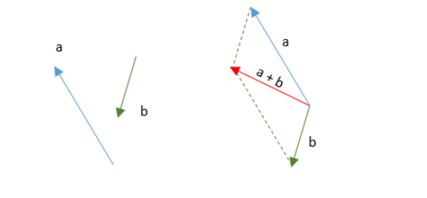
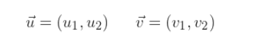
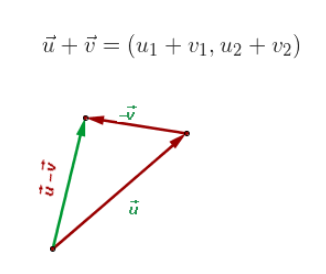
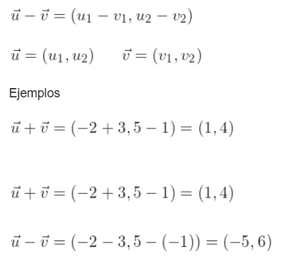
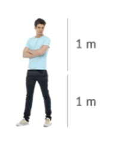
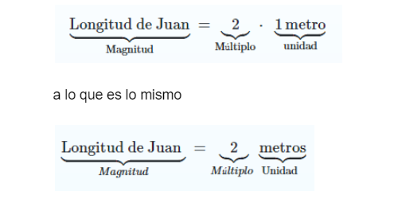

Un vector es un segmento rectilíneo en el espacio de un punto a otro, es decir que tiene una dirección y sentido, estos vectores en física sirven para expresar las llamadas magnitudes vectoriales.
Para realizar una suma gráfica de vectores debe trazar los vectores desde el mismo origen y se forma un paralelogramo usando los vectores como los lados adyacentes.
Este toma como representación 2 vectores concurrentes Este traza rectas paralelas a los vectores Este obtiene un paralelogramo cuya diagonal coincide con la suma de los vectores
en la suma analitica se suman sus respectivos componentes
  Es el nombre que se le da es para poder medir una magnitud, donde este se comunica a un patrón que se llama unidad, con la medición de la magnitud que será el múltiplo de esa unidad un ejemplo puede ser:
Si decimos que Juan mide 2 metros, estamos indicando que Juan tiene una magnitud llamada longitud y que su valor es 2 veces de lo que se considera 1 metro (unidad).
